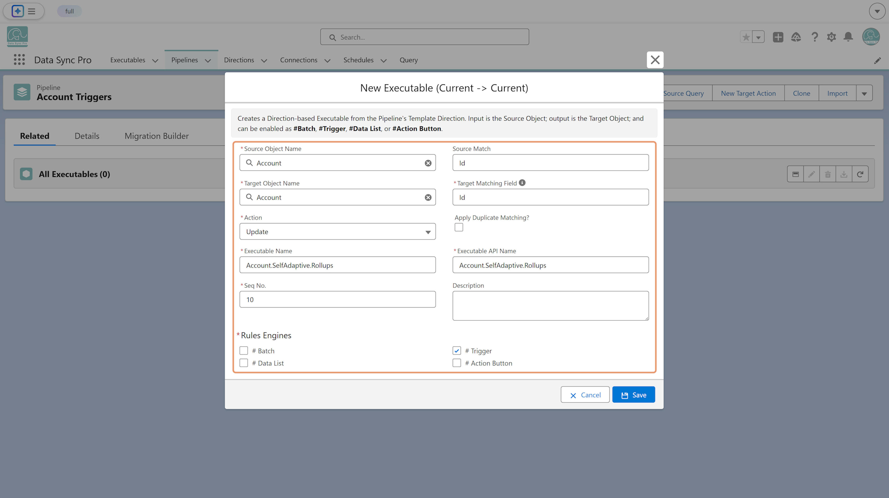
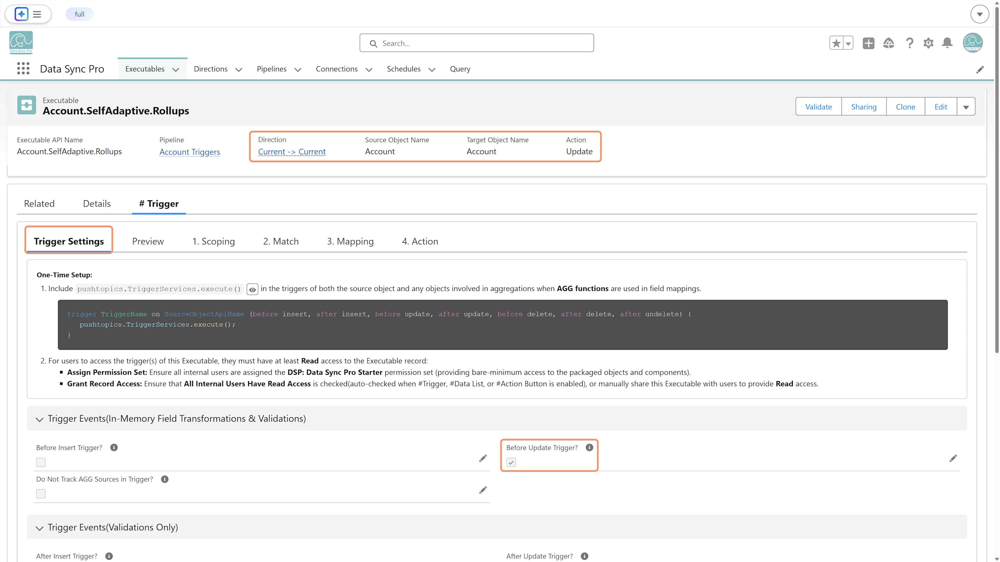

A Self-Adaptive #Trigger transforms and validates fields on the triggering records before they're committed to the database. Unlike #Trigger Actions, which operate on related data, a Self-Adaptive #Trigger treats the triggering records as both input and output.
To create a Self-Adaptive #Trigger:
ERROR function in Field Mappings or
Scope Filters to conditionally fail records with custom
messages.

